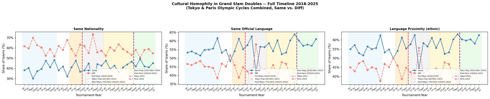

ATP Men's Grand Slam Doubles, 2018–2025 · 1,949 matches after dropping 48 retirements / walkovers · Regression sample: 3,744 team-obs (complete ranking, nationality/language for all 4 players; GS experience imputed to 0 for first-timers)
Three culture measures capture teammate similarity. Same nationality and same official language are binary (0/1). Language proximity is a continuous 0–1 index of ethnolinguistic closeness (higher = more similar language family).
Regressions use a team-level panel with tournament-by-year fixed effects,
round fixed effects, and standard errors clustered by match.
Controls in all main specifications: team average doubles ranking, opponent average ranking,
top-100 singles indicator (either player), team average GS doubles appearances
(exp_mean), and its square.
Culture measures enter one at a time.
Rank gap between teammates was tested as an additional control and is insignificant throughout; it is excluded from all main specifications.
Nationality and language data are fully resolved in the pipeline (birthplace fallback, surname lookup,
Monaco language correction, and manual_nationality.csv); zero matches are dropped for nationality.
| Step | Description | Matches | Change | Team-obs |
|---|---|---|---|---|
| 1 | Raw scraped dataset (2018–2025, incl. AO/RG/USO 2020; Wimbledon 2020 cancelled) | 1,997 | — | 3,994 |
| 2 | Drop retirements / walkovers (20 walkovers · 10 retired in set 1 · 18 retired in set 2+) | 1,949 | −48 | 3,898 |
| 3 | Drop: doubles ranking incomplete for ≥1 player | 1,935 | −14 | 3,870 |
| 4 | Drop: nationality / language missing for ≥1 player (pipeline fully resolves: birthplace, surname lookup, Monaco fix, manual_nationality.csv) | 1,935 | 0 | 3,870 |
| 5 | Exclude Olympic matches (Tokyo 2021 · Paris 2024) | 1,872 | −63 | 3,744 |
| 6 | GS experience: 216 obs are first-time GS participants (no prior appearances); exp_mean imputed to 0 — no obs dropped (these teams have mean rank ≈193 vs ≈124 for the rest; dropping would create selection bias) | — | 0 | 3,744 |
| → Grand Slams regression sample (Tables 3–4) | — | 3,744 | ||
Table 4 (tiebreak win): 1,189 tiebreaks × 2 = 2,378 team-obs (930 unique matches), covering sets 1–5 (main spec: the 1,181 standard 7pt tiebreaks; robustness spec adds 8 advantage-set/12-12-breaker deciders).
| Outcome | N | Share of matches |
|---|---|---|
| Set-1 tiebreak (7-pt) | 464 | 24.6% |
| Set-2 tiebreak (7-pt) | 475 | 25.2% |
| Any regular tiebreak (sets 1–2) | 830 | 44.0% |
| Advantage-set / 12-12-breaker decider (set 3) | 8 | 0.4% |
| Any tiebreak (all types) | 936 | 49.6% |
| Match went to 3 sets | 832 | 44.1% |
| Comeback wins (winner lost set 1) | 371 | 19.7% |
Grand Slams only, Olympics excluded (N=1,886) — see §3.4 for the Olympics figures, reported separately since Olympic tennis follows different rules and isn't part of the regression sample. The set-3 row above is relabeled from the original "match tiebreak / super-tb (10-pt)": on inspection, no tournament in this dataset ever records a genuine 10-point super-tiebreak as a set score — AO/RG/USO's set-3 score never exceeds 7 games. All 8 cases are long advantage-set finishes at Wimbledon (e.g. 16–14, 13–11, 12–10), broken out precisely in §3.2 below.
Wimbledon played men's doubles as best-of-5 sets in 2018, 2019, 2021, and 2022 (253 matches played under that rule, of which 103 actually required a 4th or 5th set — the rest finished in straight sets). Every other tournament-year in the Grand Slams — Australian Open, Roland Garros, and US Open in every year, and Wimbledon from 2023 onward — is best-of-3, with no match ever recording a 4th set. (Olympics is likewise best-of-3 throughout — see §3.4.)
| Tournament | Years (best-of-5) | Matches (best-of-5) | Reached 4 sets | Reached 5 sets |
|---|---|---|---|---|
| Wimbledon | 2018, 2019, 2021, 2022 | 253 | 103 | 50 |
| All other tournament-years | — | Best-of-3 throughout | 0 | 0 |
Three distinct outcomes end a set in this dataset. Standard tiebreak (ends 7–6/6–7, a 7-point breaker at 6-6) is the only outcome ever observed at AO/RG/USO, and applies to sets 1–2 everywhere plus any non-deciding set in a best-of-5 match. 12-12 breaker (deciding set reaches 12 games apiece, then a breaker decides it, e.g. 13–12) and advantage set, no breaker (deciding set won by a natural 2-game margin at 8+ games, e.g. 8–6, 11–9, 22–20) are observed only in deciding sets at Wimbledon (pre-2023).
| Set | N reaching this set | Standard 7-6 TB | 12-12 breaker | Advantage (no breaker) |
|---|---|---|---|---|
| 1 | 1,886 | 464 | 0 | 0 |
| 2 | 1,886 | 475 | 0 | 0 |
| 3 | 832 | 211 | 0† | 8 |
| 4 | 103 | 31 | 0 | 0 |
| 5 | 50 | 6 | 1 | 7 |
| Total | — | 1,187 | 1† | 15 |
†Set 3 should show 2 twelve-twelve-breaker deciders (match_id 903, 927 — 2021 Wimbledon, both finished 13–12), confirmed present in the raw data. They read as 0 here because the retirement filter used to build the working sample (which only checks sets 1–3 for completeness) misreads a 1-game-margin breaker finish as incomplete and drops both matches — see §3.3 below for the reconciliation and why this is not fixed in the current pass.
| Sample | Matches | Team-obs / tiebreaks |
|---|---|---|
| Pressure-outcome counts above (GS only) | 1,886 | — |
| team_gs_panel.csv (Table 3 sample, GS only) | 1,872 | 3,744 team-obs |
| tiebreak_panel.csv (Table 4 sample, sets 1–5) | 1,189 tiebreaks | 2,378 team-obs |
One known gap is documented but not fixed in this pass (pending
further review): the retirement filter only inspects sets 1–3, so match_id 903 and
927 (valid 13–12 set-3 finishes) are wrongly excluded from team_gs_panel.csv
while match_id 504 and 1204 (genuine set-4 retirements, incomplete scores 4–3 and 1–1)
are wrongly included — net effect on N is a wash, but it is not the same 2 matches the
filter's own logic intends to keep. (A previous gap — sets 4–5 tiebreaks missing from
tiebreak_panel.csv — is now fixed: it covers sets 1–5, and Table 4's main
spec uses all of them.)
Reported separately rather than pooled into §3 above, since Olympic tennis follows different rules in this dataset and Olympic matches are excluded from the regression sample entirely (Tables 3–6).
| Outcome | N | Share of matches |
|---|---|---|
| Set-1 tiebreak (7-pt) | 12 | 19.0% |
| Set-2 tiebreak (7-pt) | 21 | 33.3% |
| Any regular tiebreak (sets 1–2) | 28 | 44.4% |
| Advantage-set / 12-12-breaker decider (set 3) | 20 | 31.7% |
| Any tiebreak (all types) | 33 | 52.4% |
| Match went to 3 sets | 20 | 31.7% |
| Comeback wins (winner lost set 1) | 13 | 20.6% |
N=63 matches (Tokyo 2021: 31, Paris 2024: 32). Best-of-3 throughout — no match reaches a 4th set. Unlike the Grand Slams, Olympic tennis has no genuine 7-6/6-7 set-3 finish at all in this dataset (0 of 20 three-set matches) — every three-set Olympic match is decided by the advantage-set/12-12-breaker rule (9 of 31 matches in 2021, 11 of 32 in 2024), never a standard tiebreak.
| Period | GS window | N teams | Same Nat. | Diff Nat. | Same Lang. | Diff Lang. | Ling. Prox. | Diff Prox. |
|---|---|---|---|---|---|---|---|---|
| Pre-Tokyo | AO18 – USO19 | 1,006 | 40.1% | 59.9% | 54.8% | 45.2% | 55.7% | 44.3% |
| Tokyo Prep | AO20 – Wim21 (ex Wim20) | 676 | 40.4% | 59.6% | 55.0% | 45.0% | 55.2% | 44.8% |
| Post-Tokyo | USO21 – USO22 | 604 | 39.2% | 60.8% | 55.0% | 45.0% | 55.8% | 44.2% |
N teams = GS matches × 2. Same/Diff = share of all teams (pooled winner + loser) on each cultural dimension.
| Period | GS window | N teams | Same Nat. | Diff Nat. | Same Lang. | Diff Lang. | Ling. Prox. | Diff Prox. |
|---|---|---|---|---|---|---|---|---|
| Pre-Paris | AO22 – USO22 | 486 | 39.5% | 60.5% | 54.3% | 45.7% | 55.3% | 44.7% |
| Paris Prep | AO23 – Wim24 | 860 | 42.6% | 57.4% | 57.6% | 42.4% | 58.0% | 42.0% |
| Post-Paris | USO24 – USO25 | 626 | 43.9% | 56.1% | 58.8% | 41.2% | 60.2% | 39.8% |
N teams = GS matches × 2.

Average marginal effects (AME, dP/dx) from logit models. Each column is a separate model. Standard errors in parentheses, clustered by match. FE: tournament × year, round. All specifications include GS experience controls (exp_mean and its square). Culture measures enter one at a time.
| Variable | (1) Same Nationality | (2) Same Language | (3) Lang. Proximity |
|---|---|---|---|
| Culture measure | +0.0368** | +0.0460*** | +0.0426*** |
| (0.0163) p=0.024 |
(0.0156) p=0.003 |
(0.0156) p=0.006 | |
| Team avg. doubles rank | −0.0007*** | −0.0007*** | −0.0007*** |
| (0.0001) | (0.0001) | (0.0001) | |
| Opponent avg. doubles rank | +0.0007*** | +0.0007*** | +0.0007*** |
| (0.0001) | (0.0001) | (0.0001) | |
| Top-100 singles player | −0.0050 | −0.0038 | −0.0032 |
| (0.0318) p=0.874 |
(0.0318) p=0.906 |
(0.0318) p=0.920 | |
| Team avg GS appearances | +0.0200*** | +0.0197*** | +0.0195*** |
| (0.0051) p=0.000 |
(0.0051) p=0.000 |
(0.0051) p=0.000 | |
| GS experience squared | −0.0007*** | −0.0007*** | −0.0007*** |
| (0.0002) p=0.002 |
(0.0002) p=0.002 |
(0.0002) p=0.002 | |
| Pseudo-R² | 0.096 | 0.096 | 0.096 |
*** p<0.01 ** p<0.05 * p<0.10. Clustered SE. FE: tournament×year, round. All three culture measures statistically significant at the 5% level (nationality p=0.024, language p=0.003, proximity p=0.006). Experience shows a concave effect: positive linear (p<0.01), negative quadratic (p<0.01). Top-100 singles indicator is not significant: within-GS doubles, having a top singles player does not predict match win once ranking and experience are controlled.
Main specification: 7pt standard tiebreaks only, any set (1–5) — N = 2,362 team-obs (1,181 tiebreaks). Robustness: adds the 8 advantage-set/12-12-breaker match-tiebreak deciders — N = 2,378 team-obs (1,189 tiebreaks). Controls: rank_mean, opp_rank_mean, single_top100, exp_mean, exp_mean_sq (same as Table 3). FE: tournament×year + round. SE clustered by match.
| Variable | (1) Same Nationality | (2) Same Language | (3) Lang. Proximity | |||
|---|---|---|---|---|---|---|
| Main | Robust. | Main | Robust. | Main | Robust. | |
| Culture measure | +0.0284 | +0.0280 | +0.0065 | +0.0092 | +0.0018 | +0.0045 |
| (0.0223) p=0.202 | (0.0222) p=0.207 |
(0.0218) p=0.766 | (0.0217) p=0.673 |
(0.0217) p=0.934 | (0.0216) p=0.835 | |
| Team avg. doubles rank | −0.0003*** | −0.0003*** | −0.0003*** | −0.0003*** | −0.0003*** | −0.0003*** |
| (0.0001) | (0.0001) | (0.0001) | (0.0001) | (0.0001) | (0.0001) | |
| Opponent avg. doubles rank | +0.0003*** | +0.0003*** | +0.0003*** | +0.0003*** | +0.0003*** | +0.0003*** |
| (0.0001) | (0.0001) | (0.0001) | (0.0001) | (0.0001) | (0.0001) | |
| Top-100 singles player | −0.0642 | −0.0594 | −0.0616 | −0.0571 | −0.0615 | −0.0569 |
| (0.0432) p=0.137 | (0.0430) p=0.167 |
(0.0431) p=0.153 | (0.0429) p=0.183 |
(0.0431) p=0.154 | (0.0429) p=0.184 | |
| Team avg GS appearances | +0.0014 | +0.0011 | +0.0006 | +0.0004 | +0.0005 | +0.0003 |
| (0.0068) p=0.836 | (0.0067) p=0.865 |
(0.0068) p=0.930 | (0.0067) p=0.952 |
(0.0068) p=0.943 | (0.0067) p=0.966 | |
| GS experience squared | +0.0000 | +0.0001 | +0.0001 | +0.0001 | +0.0001 | +0.0001 |
| (0.0003) p=0.865 | (0.0003) p=0.846 |
(0.0003) p=0.812 | (0.0003) p=0.797 |
(0.0003) p=0.804 | (0.0003) p=0.787 | |
| Pseudo-R² | 0.014 | 0.013 | 0.013 | 0.013 | 0.013 | 0.013 |
| N | 2,362 | 2,378 | 2,362 | 2,378 | 2,362 | 2,378 |
Unit = one team per tiebreak (2 obs per tiebreak), now covering sets 1–5 (previously sets 1–3 only). Culture AMEs are small and insignificant across all three measures in both specs — homophily advantage does not extend to within-match tiebreak outcomes. Ranking controls remain strongly significant (p<0.001), confirming the model captures real quality differences; experience controls are not significant in the tiebreak sample. Main vs. robustness estimates are close throughout, so including the 8 advantage-set/12-12-breaker deciders does not change the conclusion.
Three sets of interactions are estimated on the main match-win sample (N = 3,744 team-obs), all with the full Table 3 control set (rank_mean, opp_rank_mean, single_top100, exp_mean, exp_mean_sq): Table 5, culture × surface, testing surface-specific coordination demands; Table 6, culture × Hofstede individualism score (team-level, demeaned), testing whether collectivist teams gain more from cultural homophily; and Table 6a, culture × GS experience, testing whether experienced teams benefit more from cultural alignment.
Hofstede individualism scores (IDV) are taken from Geert Hofstede's official 6-dimension dataset (2015 release, geerthofstede.com). Countries not covered by Hofstede are assigned proxy scores following two tiers: Tier 1 (direct cultural/linguistic kin, high confidence): BIH→SRB, CYP→GRC, MCO→FRA, MDA→ROU; Tier 2 (same-region / closest available, moderate confidence): BLR→RUS, BOL→PER, DOM→COL, LBN→Arab composite (IDV=38), TUN→MAR, GEO→TUR, KAZ→RUS, UKR→RUS, UZB→RUS. The team-level score is IC_team = (IDV_p1 + IDV_p2) / 2, demeaned across the GS regression sample (mean = 62.99, SD = 20.87).
Two specs, each pooling two surfaces into a single baseline rather than using all three at once. Spec (a): grass vs. rest (hardcourt + clay pooled as baseline). Spec (b): clay vs. rest (hardcourt + grass pooled as baseline). No tournament×year FE (round FE only) — with only two surface groups and no tournament×year FE, the surface main effect is directly estimable rather than absorbed, unlike the collinearity issue that arose with all three surfaces plus tournament×year FE together.
| Variable | (1) Same Nationality | (2) Same Language | (3) Lang. Proximity | |||
|---|---|---|---|---|---|---|
| (a) grass | (b) clay | (a) grass | (b) clay | (a) grass | (b) clay | |
| Culture (C) — pooled baseline | +0.0390** | +0.0364* | +0.0435** | +0.0482*** | +0.0420** | +0.0414** |
| (0.0183) p=0.033 | (0.0188) p=0.053 |
(0.0176) p=0.013 | (0.0181) p=0.008 |
(0.0176) p=0.017 | (0.0180) p=0.022 | |
| Surface (grass in (a) / clay in (b)) | +0.0073 | −0.0009 | −0.0036 | +0.0053 | +0.0008 | −0.0025 |
| (0.0149) p=0.626 | (0.0142) p=0.949 |
(0.0206) p=0.863 | (0.0188) p=0.776 |
(0.0208) p=0.970 | (0.0194) p=0.896 | |
| C × Surface | −0.0108 | +0.0002 | +0.0093 | −0.0096 | +0.0021 | +0.0040 |
| (0.0374) p=0.772 | (0.0346) p=0.995 |
(0.0362) p=0.798 | (0.0340) p=0.777 |
(0.0363) p=0.953 | (0.0344) p=0.907 | |
| Pseudo-R² | 0.095 | 0.095 | 0.096 | 0.096 | 0.096 | 0.096 |
| N | 3,744 | 3,744 | 3,744 | |||
Controls: rank_mean, opp_rank_mean, single_top100, exp_mean, exp_mean_sq. FE: round only (no tournament×year FE). SE clustered by match. All surface main effects and interactions are insignificant (p > 0.62 throughout) in both specs. The culture advantage documented in Table 3 does not vary significantly by surface, consistent with the earlier three-surface specification.
IC_team_dm = team-average Hofstede IDV score minus the sample mean (62.99). Positive values = more individualist than average. Hypothesis: more individualist teams rely less on in-group bonding → negative θ. Spec 2 only (includes the main IC effect) — the reported specification.
| Variable | (1) Same Nationality | (2) Same Language | (3) Lang. Proximity |
|---|---|---|---|
| Culture (C) | +0.0297* | +0.0386** | +0.0351** |
| (0.0166) p=0.074 |
(0.0162) p=0.018 |
(0.0162) p=0.031 | |
| IC_team_dm | +0.0012** | +0.0008 | +0.0008 |
| (0.0006) p=0.045 |
(0.0008) p=0.272 |
(0.0008) p=0.275 | |
| C × IC_team_dm (θ) | −0.00054 | −0.00004 | −0.00001 |
| (0.00079) p=0.490 |
(0.00089) p=0.960 |
(0.00089) p=0.990 | |
| Pseudo-R² | 0.097 | 0.097 | 0.097 |
| N | 3,744 | 3,744 | 3,744 |
Controls: rank_mean, opp_rank_mean, single_top100, exp_mean, exp_mean_sq. FE: tournament×year + round. SE clustered by match. The culture main effects are consistent with Table 3. The interaction θ is small and insignificant across all three measures (p > 0.49), providing no evidence that individualism moderates the cultural homophily advantage. The main IC_team_dm coefficient is positive and significant for same nationality (p=0.045) — teams with higher individualism scores perform better overall — but is insignificant for the language measures (p>0.27).
Team-obs involving a player whose IDV score relies on a Tier-2 (moderate-confidence) proxy — BLR, BOL, DOM, GEO, KAZ, LBN, TUN, UKR, UZB — are dropped (154 of 3,744 team-obs), leaving only direct Hofstede matches and Tier-1 (high-confidence) proxies.
| Variable | (1) Same Nationality | (2) Same Language | (3) Lang. Proximity |
|---|---|---|---|
| Culture (C) | +0.0202 | +0.0296* | +0.0262 |
| (0.0170) p=0.235 |
(0.0166) p=0.075 |
(0.0166) p=0.115 | |
| IC_team_dm | +0.0007 | +0.0001 | +0.0001 |
| (0.0006) p=0.219 |
(0.0008) p=0.903 |
(0.0008) p=0.915 | |
| C × IC_team_dm (θ) | +0.00004 | +0.00082 | +0.00086 |
| (0.00081) p=0.957 |
(0.00093) p=0.374 |
(0.00093) p=0.351 | |
| Pseudo-R² | 0.097 | 0.097 | 0.097 |
| N | 3,590 | 3,590 | 3,590 |
Same controls and FE as Table 6 above, estimated on the Tier-2-excluded subsample. Point estimates on C shrink somewhat relative to the full-sample spec (e.g. same nationality: +0.0297 → +0.0202, no longer significant), consistent with the smaller, more homogeneous sample rather than a change in sign or a qualitatively different story. The IC_team_dm main effect for same nationality also loses significance (p=0.045 → p=0.219) once the weaker-confidence proxy countries are dropped, so that result should be treated as sensitive to the Tier-2 approximations. The θ interaction remains small and insignificant throughout, matching the full-sample conclusion that individualism does not moderate the cultural homophily advantage.
exp_mean is demeaned (exp_mean_dm = exp_mean − sample mean of 11.85 appearances, SD = 5.30), consistent with how ic_team_dm is demeaned for Table 6. The main effect of culture (C) is therefore evaluated at the sample-average level of GS experience, not at zero; the interaction captures how the marginal effect changes per additional Grand Slam appearance relative to that average. exp_mean_sq (the same non-demeaned quadratic control as in Table 3) is included alongside exp_mean_dm, per the blanket rule that all heterogeneity tables carry the full Table 3/4 control set.
| Variable | (1) Same Nationality | (2) Same Language | (3) Lang. Proximity |
|---|---|---|---|
| Culture (C) — mean experience | +0.0369** | +0.0437*** | +0.0403*** |
| (0.0164) p=0.024 |
(0.0156) p=0.005 |
(0.0156) p=0.010 | |
| C × exp_mean_dm | +0.0001 | +0.0060* | +0.0060* |
| (0.0032) p=0.963 |
(0.0031) p=0.054 |
(0.0031) p=0.055 | |
| Pseudo-R² | 0.096 | 0.097 | 0.097 |
| N | 3,744 | 3,744 | 3,744 |
Controls: rank_mean, opp_rank_mean, single_top100, exp_mean_dm, exp_mean_sq (full Table 3 control set). FE: tournament×year + round. SE clustered by match. With exp_mean_sq back in the model, the culture main effects at mean experience are close to Table 3's own estimates (+0.0368/+0.0460/+0.0426) and all significant. The positive and marginally significant interaction for language/proximity (p≈0.054–0.055) implies that advantage grows further with experience above the mean; nationality homophily shows no significant experience gradient (p=0.963).